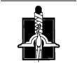

Kılıç Ustası
Yükselen güneş, kızıl siluetini ufkun üzerine itti ve Falme'nin limana doğru uzanan taş sokaklarına uzun gölgeler vurdu. Denizden esen bir meltem bacalardan çıkan kahvaltı ateşlerinin dumanını iç bölgelere üfürüyordu. Dışarıda dolaşanlar yalnızca erken kalkanlardı, nefesleri sabah serinliğinde buhara dönüşüyordu. Bir saat sonra sokakları dolduracak kalabalıklarla kıyaslandığında, şehir neredeyse boş görünüyordu.
Hâlâ kapalı olan bir nalbur dükkânının önünde dikine oturtulmuş bir fıçıda oturan Nynaeve, ellerini koltukaltlarına sokarak ısıtıyor ve ordusuna bakıyordu. Min, yolun karşı tarafında Seanchan pelerinine bürünmüş oturuyor ve buruşuk bir erik yiyordu. Pösteki paltosu içinde Elayne de, Min'in olduğu sokağın hemen karşısındaki bir ara yolun kıyısına sıkışmıştı. Min'in yanında rıhtımlardan aşırılmış büyük bir çuval özenle katlanmış halde duruyordu. Ordum, diye düşündü Nynaeve kasvetle. Ama onlardan başka kimse yok.
Sokağı tırmanan bir sul'dam ile damane'ye gözü ilişti, bileziği takmış sarı saçlı bir kadın ile tasmayı taşıyan esmer bir kadın; ikisi de uykulu bir halde esniyordu. Sokağı onlarla paylaşan tek tük Falmeli de, gözlerini kaçırıp onlara bol bol yer bırakıyordu. Nynaeve'in limana kadar görebildiği hiçbir yerde, başka bir Seanchan yoktu. Başını diğer yöne çevirmedi. Bunun yerine önceki gibi yerleşmeden önce üşüyen omuzlarını çalıştırılmış gibi gerinip omuzlarını silkti.
Min, yarı yarıya yenmiş eriğini bir tarafa attı, sokağın yukarısına doğru gelişigüzel bir bakış attı ve yine kapı dikmesine yaslandı. Oradaki yol da açıktı, yoksa Min ellerini dizlerine koyardı. Min ellerini gerginlikle ovuşturmaya başladı ve Nynaeve Elayne'in artık ayak parmakları üzerinde hevesle yaylandığını fark etti.
Bizi ele verirlerse, ikisinin de kafasına yumruğu basarım. Ama bulunmaları durumunda üçünün de başına geleceklerin sadece Seanchanlardan sorulacağını biliyordu. Planladığı şeyin işe yarayıp yaramayacağı konusunda da gerçek anlamda hiçbir fikri olmadığının fazlasıyla bilincindeydi. Onları ele veren şey pekâlâ kendi başarısızlığı olabilirdi. Bir kez daha herhangi bir şey ters giderse, ne yapıp edip dikkatleri kendi üzerine çekerek Min ile Elayne'in kaçmasına imkân vermeyi kararlaştırdı. Onlara herhangi bir şey ters giderse kaçmalarını söylemiş ve kendisinin de kaçacağına inanmalarına izin vermişti. O zaman ne yapacağını bilmiyordu. Ancak beni canlı ele geçirmelerine izin veremem. Lütfen, Işık, o olmasın.
Sul'dam ile damane orada bekleyen üç kadının arasında kalana kadar sokağı tırmandılar. Bağlı çiftin epey yanından on iki Falmeli geçiyordu.
Nynaeve bütün öfkesini topladı. Yularlılar ve Yuları Tutanlar. Pis tasmalarını Egwene'in boynuna geçirmişlerdi ve ellerinden gelse kendisiyle Elayne'in boynuna da geçirirlerdi. Min'e sul'dam'ların istediklerini nasıl yaptırdıklarını anlattırmıştı. Min'in bazı şeyleri, en kötülerini söylemediğine emindi, ama söyledikleri Nynaeve'i akkor bir öfkeye sürüklemeye yeterdi. Bir anda kara, dikenli bir dalın üzerinde beyaz bir tomurcuk ışığa, saidara açmıştı ve Tek Güç içini doldurmuştu. Görebilenler için etrafında bir hale olduğunu biliyordu. Soluk benizli sul'dam irkildi ve esmer damanenin ağzı açık kaldı, ama Nynaeve onlara hiç fırsat vermedi. Yönlendirdiği Güç, hafif bir sızıntıdan ibaretti, ama onu çatlatmayı başardı; bir toz zerresini havadan alan bir kamçının saklayışı gibi.
Gümüş tasma aniden açıldı ve bir takırtıyla parke taşlarına düştü. Nynaeve ayağa fırladığı anda içini çekerek ferahladı.
Sul'dam düşen tasmaya zehirli bir yılana bakarmış gibi baktı. Damane titreyen ellerinden birini boğazına götürdü, ama şimşek işlemeli kadın hareket edecek şansı bulamadan damane dönüp kadının suratına bir yumruk patlattı; sul'dam'ın dizleri büküldü ve kadın az kaldı düşecekti.
"Aferin sana!" diye seslendi Elayne. Min gibi o da çoktan koşarak kadına yaklaşmaya başlamıştı.
İçlerinden biri iki kadına ulaşamadan damane etrafa şaşkın bir bakış attıktan sonra, tüm hızıyla kaçtı.
"Sana zarar vermeyeceğiz!" diye seslendi Elayne arkasından. "Biz dostuz!"
"Sessiz ol!" diye tısladı Nynaeve. Cebinden bir avuç paçavra çıkararak hâlâ yalpalayan sul'dam'ın açık ağzına acımasızca tıktı. Min tahıl çuvalını bir toz bulutu içinde aceleyle çıkararak sul'dam'ın başına geçirdi ve kadını beline kadar sakladı. "Şimdiden dikkatleri fazlasıyla çektik."
Bu hem doğru, hem değildi. Dördü hızla boşalan bir sokakta duruyordu, ama başka bir yerde olmaya karar veren kişiler onlara bakmaktan kaçınıyordu. Nynaeve birkaç saniye kazanmak için buna -insanların Seanchanlarla ilgili her türlü şeyden uzak durmak için ellerinden geleni yapmasına- güvenmişti. Eninde sonunda konuşacaklardı, ama fısıltılar halinde; Seanchanların bir şey olduğunu öğrenmesi saatler alabilirdi.
Örtülü kadın mücadele etmeye, çuvalın içinden paçavralar yüzünden boğuk sesler çıkarmaya başladı, ama Nynaeve ile Min kollarını kadına dolayarak onu yakınlardaki bir ara sokağa çektiler. Yular ile tasma arkalarındaki parke taşlarında takırdayarak sürükleniyordu.
"Kaldır şunu," diye tersledi Nynaeve Elayne'i. "Seni ısırmaz!'
Elayne derin bir nefes aldıktan sonra gümüşi metali, kendisini ısırabileceğinden korkuyormuş gibi dikkatle topladı. Nynaeve onun duygularını, çok olmasa da bir ölçüde paylaşıyordu. Her şey, hepsinin planlanan şeyleri tam olarak yapmasına bağlıydı.
Sul'dam tekmeler atarak serbest kalmaya çalışıyordu, ama Nynaeve ile Min bir olup, onu o sokaktan, evlerin arasındaki başka, biraz daha geniş bir geçide, oradan da başka bir ara sokağa ve nihayet, tahta bölmelere bakılırsa bir zamanlar içinde iki at bulunan kaba, ahşap bir barakaya sürüklediler. Seanchanlar geleli beri çok az kişinin gücü at beslemeye yetiyordu ve Nynaeve'in orayı gözlediği bir gün boyunca, kimse barakanın yakınına gitmemişti. İçeride, bakımsızlığı gösteren küf kokulu bir toz tabakası vardı. Hepsi içeri girer girmez Elayne gümüş yuları yere bırakıp ellerini samanlara sildi.
Nynaeve biraz daha Güç'ü yönlendirdi bilezik toprak zemine düştü. Sul'dam bir vaveylâ kopararak kendini oradan oraya atmaya başladı.
"Hazır mısınız?" diye sordu Nynaeve. Diğer ikisi başlarıyla evetlediler ve çuvalı tutsaklarının üzerinden hızla çektiler.
Mavi gözleri tozdan sulanan sul'dam hırıltıyla soluyordu, ama yüzünün kırmızılığı çuvaldan olduğu kadar öfkedendi. Kapıya doğru fırladı, ama onu ilk adımında yakaladılar. Çelimsiz biri değildi, ancak onlar üç kişiydiler ve işlerini bitirdiklerinde sul'dam iç çamaşırlarına kadar soyulmuştu ve elleriyle ayakları sağlam bir iple bağlanmış, diğer bir ip parçası da ağzındaki tıkacı çıkarmasına engel olacak şekilde yerleştirilmiş halde, bölmelerden birinde yatıyordu.
Şişen dudağını rahatlatmaya çalışan Min, çıkardıkları şimşek panelli elbiseyle yumuşak çizmelere baktı. "Senin üzerine olabilir, Nynaeve. Elayne'e ya da bana olmaz." Elayne saçlarındaki samanları ayıklıyordu.
"Bunu görüyorum. Aslında seni seçmeyi hiç düşünmemiştim. Seni fazla iyi tanıyorlar." Nynaeve aceleyle giysilerini çıkardı. Onları bir yana attı ve sul'dam giysisini sırtına geçirdi. Min düğmeleri iliklemesine yardım etti.
Nynaeve, çizmelerin içinde ayak parmaklarını oynattı; çizmeler ayağını biraz sıkıyordu. Elbisenin de göğüs kısmı sıkıyor, diğer yerleri de bol geliyordu. Etekleri neredeyse yere değiyordu, sul'dam'ların etekleri bu kadar uzun olmazdı, ama diğerlerinden birinin üzerinde daha da kötü dururdu. Bileziği kaparak derin bir nefes aldı ve sol bileğine geçirdi. Bileziğin uçları birleşti ve görünürde tek yeri kalmadı. Bilezik takmaktan farklı değildi. Nynaeve farklı olacağından korkmuştu.
"Elbiseyi al, Elayne." Bir çift elbise almış -kendisine ve Elayne'e ait olan birer elbise- ve damane'lerin giydiği gri renge ya da o renge olabildiğince yakın bir renge boyayarak buraya saklamışlardı. Elayne açık tasmaya bakıp dudaklarını yalamak dışında herhangi bir hareket yapmadı. "Elayne, onu giymen gerek. Min bunu yapamaz, onu çok fazla kişi gördü. Bu giysi benim yerime senin üzerine olsaydı onu ben takardım." Tasmayı takmak zorunda kalsa delireceğini düşünüyordu; şimdi Elayne'le konuşurken sesinin haşin çıkmaması bundandı.
"Biliyorum." Elayne içini çekti. "Keşke insana ne yaptığı hakkında daha fazla bilgim olsaydı." Kızıl-sarı saçlarını çekti. "Min, bana yardım et, lütfen." Min elbisesinin sırtındaki düğmeleri açmaya başladı.
Nynaeve, gümüş tasmayı irkilmeden eline almayı başardı. "Öğrenmenin bir yolu var." Fakat bir saniye tereddüt ederek eğildi ve tasmayı sul'dam'ın boynuna geçirdi. Bunu hak eden biri varsa, odur, dedi kendisine kararlılıkla. "Bize işe yarar bir şey söyleyebilir." Mavi gözlü kadın, kendi boynundan Nynaeve'in bileğine uzanan yulara baktıktan sonra küçümseyen bakışlarını Nynaeve'e kaldırdı.
"O şekilde çalışmıyor," dedi Min, ama Nynaeve onu doğru dürüst duymadı bile.
Diğer kadının... farkındaydı, kadının hissettiği şeylerin, ipin ayak bileklerine ve arkasındaki bileklerine batışının, ağzındaki paçavralardaki kokmuş balık tadının, iç çamaşırlarının ince kumaşından samanların tenini delisinin farkındaydı. Sanki bunları kendisi, Nyneve hissediyor gibi değildi; kafasının içinde sul'dam'a ait olduğunu bildiği duyumlardan bir öbek vardı.
Bu duyumları yok saymaya çalışarak yutkundu -yok olmadılar- ve bağlı kadınla konuştu. "Sorularıma dürüst cevaplar verirsen sana zarar vermem. Bizler Seanchan değiliz. Ama bana yalan söylersen..." Yuları tehditkâr bir hareketle kaldırdı.
Kadının omuzları sarsıldı ve ağzı tıkacın etrafında alaylı bir gülüşle büküldü. Nynaeve'in sul'dam'ın kahkahalarla güldüğünü anlaması bir an sürdü.
Nynaeve'in ağzı gerildi, ama sonra aklına bir düşünce geldi. Başının içindeki duyumlar öbeği, kadının bedeniyle hissettiği her şeyin toplamı gibiydi. Deney kabilinden, öbeğe bir şeyler eklemeye çalıştı.
Gözleri birden yuvalarından fırlayan sul'dam, ağzındaki tıkacın bile yalnızca kısmen kesebildiği bir haykırış kopardı. Bir şeyleri savuşturmak istercesine, arkasındaki ellerini sallayıp samanda sürüklenerek boş yere kaçmaya çalıştı.
Nynaeve'in ağzı açıldı ve kendisini aceleyle eklediği fazladan duygulardan kurtardı. Sul'dam ağlayarak olduğu yere yığıldı.
"Ne... Ona... ne yaptın?" diye sordu Elayne güçlükle duyulan bir sesle. Ağzı açık kalan Min bakmakla yetindi.
Nynaeve hırçın bir tavırla yanıt verdi. "Marith'e bir fincan attığında Sheriam'ın sana yaptığı şeyin aynısını." Işık, ama bu pis bir şey.
Elayne yüksek sesle yutkundu. "Ah."
"Ama bir a'dam'ın böyle çalışmaması gerekiyor," dedi Min. "Her zaman yönlendirmeyen bir kadın üzerinde işe yaramayacağını iddia ediyorlardı."
"Çalıştığı sürece nasıl çalışması gerektiği umurumda değil." Nynaeve gümüşi metal yuları hemen tasmayla birleştiği yerden kavrayıp kadını gözlerine bakabilecek kadar yerden kaldırdı. Korkmuş gözler gördü. "Beni kulaklarını aç da dinle. Yanıtlar istiyorum ve onları almazsam, derini yüzdüğümü düşünmeye başlayabilirsin." Kadının yüzünden saf bir dehşet geçti ve kadının söylediklerini harfiyen aldığını anlayan Nynaeve'in içi kalktı. Yapabileceğimi düşünüyorsa, bildiği bir şey olduğundandır. Bu yularlar bu işe yarıyor. Bileziği bileğinden koparıp atmamak için kendisine iyice hakim olmak zorunda kaldı. Bunun yerine yüzüne daha sert bir ifade verdi. "Beni yanıtlamaya hazır mısın? Yoksa daha fazla ikna edilmeye ihtiyacın var mı?"
Kadının başını çılgınca iki yana sallayışı ona gerekli cevabı verdi. Nynaeve tıkacı çıkardığında, kadın, "Sizi rapor etmem. Yemin ederim. Bunu boynumdan çıkar yeter. Altınım var. Al onu. Yemin ederim, kimseye söylemem," diye gevelemeden önce ancak bir kez yutkundu.
"Kes sesini," diye çıkıştı Nynaeve ve kadın anında ağzını kapadı. "Adın nedir?"
"Seta. Lütfen. Size yanıt veririm, ama ne olur çıkarın şunu! Birisi beni bunu takarken görürse..." Seta'nın gözleri yulara kaydıktan sonra sıkı sıkı kapandı. "Lütfen?" diye mırıldandı.
Nynaeve bir şeyi anladı. Elayne'e bu tasmayı asla giydiremezdi.
"Artık bu işi yapsak iyi olacak," dedi Elayne kararlılıkla. Artık o da iç çamaşırlarıyla kalmıştı. "Bana bu diğer elbiseyi giymem için bir dakika izin ver, sonra-"
"Tekrar kendi giysilerini giy," dedi Nynaeve.
"Birisinin damane rolü yapması gerek," dedi Elayne, "yoksa Egwene'e asla ulaşamayız. O elbise senin üzerine uyuyor, Min de bunu yapamaz. Geriye bir ben kalıyorum."
"Giysilerini giy, dedim. Yularlı Kişimiz olacak başka birini bulduk." Nynaeve Seta'yı tutan yuları çekti ve sul'dam yüksek sesle nefes aldı.
"Hayır! Hayır, lütfen! Birisi beni görürse-" Nynaeve'in soğuk bakışlarını görünce sustu.
"Bana kalırsa, sen katilden betersin, Karanlıkdostu'ndan da kötüsün. Senden beter bir şey düşünemiyorum. Bu şeyi bileğime takmak, bir saatliğine bile senin gibi olmak zorunda kalmak, midemi bulandırıyor. Bu yüzden, sana yapmaktan kaçınacağım bir şey olduğunu sanıyorsan, tekrar düşün. Görülmek istemiyor musun? İyi. Biz de istemiyoruz. Gerçi hiç kimse bir damane'ye gerçekten bakmaz. Yol boyunca bir Yularlı Kişi'nin yapması gerektiği gibi başını yerden kaldırmadığın sürece, kimse seni fark etmez bile. Ama bizlerin de fark edilmemesinden emin olmak için elinden geleni yapsan iyi olur. Biz fark edilirsek, sen de kesinlikle görülürsün ve bu seni tutmaya yetmezse, sana söz veriyorum ki, annenin babana verdiği ilk öpücüğe lanet okuturum sana. Birbirimizi anladık mı?"
"Evet," dedi Seta zor duyulan bir sesle. "Buna yemin ederim."
Elayne'in griye boyalı elbisesini yulardan ve Seta'nın başının üzerinden geçirebilmeleri için Nynaeve bileziği çıkarmak zorunda kaldı. Elbise göğüs kısmı bol, kalçaları da dar olduğundan kadının üzerine iyi oturmadı, ama Nynaeve'inki de onun kadar kötü, üstelik de kısa olurdu. Nynaeve insanların gerçekten damane'lere bakmadığını ümit ediyordu. Bileziği istemeye istemeye tekrar taktı.
Elayne Nynaeve'in giysilerini topladı, diğer griye boyalı elbiseye sardı ve bir bohça, çiftlik giysileri içindeki bir kadının bir sul'dam ve damaneyi izlerken taşıyacağı bir bohça yaptı. "Gawyn bunu duyduğunda içi kan ağlayacak," dedi ve güldü. Kahkahası kulağa zorlama geliyordu.
Nynaeve önce ona, sonra Min'e dikkatle baktı. Sıra tehlikeli bölüme gelmişti. "Hazır mısınız?"
Elayne'in gülümsemesi soldu. "Hazırım."
"Hazırım," dedi Min ters ters.
"Siz... biz... nereye gidiyoruz?" dedi Seta, ardından da çabucak ekledi: "Sormamın sakıncası yoksa?"
"Aslanın inine," dedi Elayne ona.
"Karanlık Varlık'la dans etmeye," dedi Min.
Nynaeve içini çekip başını iki yana salladı. "Anlatmaya çalıştıkları şu ki, bütün damane'lerin tutulduğu yere gidiyoruz ve onlardan birini serbest bırakmayı düşünüyoruz.
Seta'yı barakanın dışına ittiklerinde kadının ağzı hâlâ hayretten açıktı.
* * *
Bayie Domon, gemisinin güvertesinden batan güneşi izliyordu. Rıhtımlarda faaliyet çoktan başlamış da olsa, limandan yukarı çıkan sokaklar hâlâ büyük oranda boştu. Bir kazığa tünemiş bir martı gözünü dikmiş, ona bakıyordu; martıların merhametsiz gözleri olurdu.
"Bundan emin misin, Kaptan?" diye sordu Yarin. "Seanchanlar hepimizin güvertede ne yaptığımızı merak ederse-"
"Sen her palamarın yanında bir balta olduğuna emin ol," dedi Domon kaba bir tavırla. "Ve Yarin? O kadınlar gemiye binmeden önce adamlardan biri halatlardan birini kesmeye çalışırsa, kafasını kırarım."
"Ya gelmezlerse, kaptan? Ya onların yerine Seanchan askerleri gelirse?"
"Bağırsaklarına hakim ol be adam! Askerler gelirse, limanın girişine doğru kaçanın ve Işık'ın hepimize merhamet etmesi için dua ederiz. Ama askerler gelene kadar, o kadınları beklemeye niyetliyim. Şimdi git de kendine hiçbir şey yapmıyormuş süsü ver."
Domon kasabaya, damane tutulduğu yere doğru bakmaya döndü. Parmakları küpeştede gerginlikle davul çalıyordu.
* * *
Denizden esen meltem, Rand'ın burnuna kahvaltı için yakılan ateşlerin kokusunu getirdi ve güve yeniği pelerinini dalgalandırmaya çalıştı, ama Kızıl şehre yaklaşırken Rand pelerinini bir eliyle kapalı tuttu. Buldukları giysiler arasında ona uyacak bir palto yoktu ve kollarındaki halis gümüş işlemelerle yakasındaki balıkçılları gizlemenin en iyisi olacağını düşündü. Seanchanlıların fethedilen kişilerin silah taşımasına karşı tavırları, balıkçıl nişanlı kılıçları kapsamıyor olabilirdi.
Önünde, sabahın ilk gölgesi uzanıyordu. Hurin'in araba bahçeleri ile at arazileri içinden geçtiğini ancak görüyordu. Tacirlerin sıra sıra at arabaları arasında sadece bir iki adam geziyordu, onların da tekerlek tamircisi ve demircilerin taktığı türden önlükleri vardı. Şehre ilk giren Ingtar çoktan gözden kaybolmuştu. Perrin ile Mat belirli aralıklarla Rand'ın arkasından geliyordu. Rand arkasına bakarak onları kontrol etmedi. Onları birbirlerine bağlayacak hiçbir şey olmaması gerekiyordu; erken vakitte Falme'ye gelen beş adamdılar, ancak birlikte değil.
Etrafını çitleri çoktan doyurulmayı bekleyen atlarla dolu at arazileri sarmıştı. Hurin kapıları hâlâ kapalı ve sürgülü olan iki ahırın arasından kafasını uzattı, Rand'ı gördü ve başını tekrar indirmeden önce ona işaret etti. Rand doğru aygırı o yöne çevirdi.
Hurin, atının dizginlerini tutarak ayakta duruyordu. Üzerinde ceketi yerine uzun yeleklerden biri vardı ve kısa kılıcıyla kalkanını gizleyen kalın pelerine rağmen, soğuktan titriyordu. "Lord Ingtar arkada," dedi dar geçidi başıyla işaret ederek. "Atları burada bırakıp yolun yarısını yayan gideceğimizi söylüyor." Rand atından inerken Koklayıcı ekledi: "Fain hemen o sokaktan gitmiş, Lord Rand. Neredeyse buradan bile kokusunu alabiliyorum."
Rand, Kızıl'ı Ingtar'ın atını çoktan bağladığı, ahırın arkasındaki yere götürdü. Shienarlı derisi birkaç yerinden yenmiş pis bir pösteki palto içinde pek lorda benzemiyordu ve kılıcı, paltonun üzerindeki kemerinde tuhaf görünüyordu. Adamın gözlerinde hummalı bir keskinlik vardı.
Rand Kızıl'ı Ingtar'ın aygırının arkasına bağladıktan sonra eyer torbalarının başında bir an durakladı. Sancağı arkada bırakamamıştı. Askerlerden hiçbirinin torbaları açacağını sanmasa da, ne Verin için aynı şeyi söyleyebiliyor, ne de sancağı bulması durumunda kadının ne yapacağını tahmin edebiliyordu. Yine de, sancağı yanında taşımak Rand'ı tedirgin ediyordu. Eyer torbalarını eyerinin arkasına bağlı halde bırakmaya karar verdi.
Mat de onlara katıldı ve birkaç saniye sonra Hurin Mat ile birlikte geldi. Mat'in üzerinde paçalarını çizmelerine soktuğu bol pantolon, Perrin'in sırtında da kendisine kısa gelen pelerin vardı. Rand, hepsinin alçak dilencilere benzediğini düşünse de, köylerden pek dikkat çekmeden geçmişlerdi.
"Şimdi," dedi Ingtar. "Ne göreceksek görelim."
Akıllarında, gitmeye niyetlendikleri özel bir yer yokmuş gibi, kendi aralarında konuşarak toprak caddeye çıktılar ve aheste adımlarla araba bahçelerinin yanından yokuşlu parke taş döşeli caddelere aheste adımlarla geçtiler. Rand, ne kendisinin ne de başkalarının ne dediğinin farkında değildi. Ingtar'ın planı, bir arada yürüyen herhangi bir gaip adama benzemeye çalışmaktı, ama sokakta çok az insan vardı. Sabah serinliğinde bu sokaklarda beş adam kalabalık ediyordu.
Takım halinde yürümelerine rağmen grubun başını, havayı koklayan ve şu ya da bu caddeye dönen Hurin çekiyordu. Geriye kalanlar da, o döndüğünde, niyetleri baştan beri buymuş gibi, onunla birlikte dönüyorlardı. "Bu kasabanın dört bir yanını dolaşmış," diye mırıldandı Hurin yüzünü buruşturarak. "Kokusu her yerde ve o kadar pis ki, eskisini yenisinden ayırmak zor. En azından hâlâ burada olduğunu biliyorum. Bunlardan bazılarının en fazla bir iki günlük olduğuna eminim. Gerçekten eminim," diye ekledi daha az kuşkulu bir şekilde.
Etrafta birkaç kişi daha görünmeye başladı, mallarını tezgâhına yayan bir meyve satıcısı; kolunun altında büyük bir parşömen tomarı, omzuna bir karatahta asılmış bir adam; el arabasındaki bileme taşının milini yağlayan bir bileyici. Karşı yönden gelen iki kadın yanlarından geçti; birinin gözleri yerdeydi ve boynunda gümüş bir tasma vardı, diğerinin de üzerinde şimşek işli bir elbise vardı ve kangal halinde dolanmış, gümüş bir yular taşıyordu.
Rand'ın nefesi kesildi; arkaya dönüp onlara bakmamak için çaba sarf etmesi gerekti.
"O şey miydi...?" Mat'in gözleri fal taşı gibi açılmış, göz çukurlarından dışarı bakıyordu. "O bir damane miydi?"
"Öyle tarif ediliyorlar," dedi Ingtar ters ters. "Hurin, bu Gölgenin belası şehrin her sokağını arşınlayacak mıyız?"
"Her yerde gezmiş, Lord Ingtar," dedi Hurin. "Leş kokusu her yerde." Taş evlerin üç dört katlı, hanlar kadar büyük olduğu bir alana gelmişlerdi.
Bir köşeyi döndüler ve sokağın bir yanındaki büyük bir evin önünde nöbet tutan yirmi askeri -ve o evin karşısındaki başka bir evin basamaklarında birbirleriyle konuşan şimşek desenli elbiseler içindeki iki kadını- gören Rand'ın nefesi kesildi. Askerler tarafından korunan binanın üzerinde bir sancak rüzgârda dalgalanıyordu; yıldırımları elinde tutan altın bir şahin. Kadınların konuştuğu evde, kadınlardan başka bir işaret yoktu. Subayın şaşaalı zırhı, kırmızı, siyah ve altın renklerdeydi, miğferi altın varaklıydı ve örümcek kafasına benzetilmişti. Sonra Rand askerlerin arasında diz çökmüş iki iri, sert derili yaratıkları gördü ve adımını şaşırdı.
Grolmler. Üç gözlü ve takoz şekilli o kafaları tanımamaya imkân yoktu. Olamazlar. Belki de gerçekten uyuyordu ve bütün bunlar bir kâbustu. Belki de henüz Falme'ye doğru yola bile çıkmadık.
"Işık aşkına, nedir bunlar?" diye sordu Mat.
Hurin'in gözleri, yüzü kadar büyük görünüyordu. "Lord Rand, onlar... Onlar..."
"Önemi yok," dedi Rand. Hurin bir an sonra başıyla onayladı.
"Buraya Boru için geldik," dedi Ingtar, "Seanchan canavarlarına bakmak için değil. Fain'i bulmaya yoğunlaş, Hurin."
Askerler onlara doğru dürüst bakmadı bile. Sokak doğrudan yuvarlak limana iniyordu. Rand aşağıya demirlenmiş gemileri görebiliyordu; uzun direkli, kare görünümlü, o mesafeden küçük görünen gemiler.
"Buraya çok gelmiş." Hurin elinin tersiyle burnunu ovuşturdu. "Sokakta kat kat leş kokusu var. Bence buraya dün bile gelmiş olabilir, Lord Ingtar. Belki de dün gece."
Mat birden iki eliyle paltosunu kavradı. "İçeride," diye fısıldadı. Arkasını dönüp sancaklı büyük binaya bakarak geri geri yürüdü. "Hançer orada. O -o şeyler yüzünden onu daha önce fark etmemiştim bile, ama şimdi hissedebiliyorum."
Perrin parmağıyla Mat'in kaburgalarını dürttü. "Eh, onlar neden kendilerine alık alık baktığını merak etmeden önce kes şunu."
Rand omzunun üzerinden arkaya bir göz attı. Subay arkalarından bakıyordu.
Mat aksi bir tavırla arkasını döndü. "Sadece yürümeye devam mı edeceğiz? İçeride, diyorum size."
"Bizim peşinde olduğumuz şey Boru," diye homurdandı Ingtar. "Fain'i bulmaya ve Boru'nun nerede olduğunu söyletmeye niyetliyim." Yavaşlamadı.
Mat hiçbir şey söylemedi, ama yüz ifadesinin tamamı bir yakarıştı.
Benim de Fain'i bulmam gerek, diye düşündü Rand. Buna mecburum. Ama Mat'in yüzüne bakınca, "Ingtar, hançer o binadaysa, muhtemelen Fain de öyledir. Ne hançeri ne de Boru'yu gözünün önünden ayıracağını sanmıyorum," dedi.
Ingtar durdu. Bir an sonra, "Olabilir, ama burada durarak bunu asla öğrenemeyiz," dedi.
"Onu izleyip dışarıya çıkmasını bekleyebiliriz," dedi Rand. "Sabahın bu saatinde dışarı çıkarsa, geceyi orada geçirmiş, demektir. Ve de iddiaya girerim ki, onun uyuduğu yer, Boru'nun olduğu yerdir. Dışarı çıkarsa, öğle vakti Verin'e dönebilir, akşam çökmeden de bir plan yapmış olabiliriz."
"Verin'i beklemeye niyetim yok," dedi Ingtar, "bu geceyi de beklemeyeceğim. Zaten fazlasıyla bekledim. Güneş tekrar batmadan önce Boru'yu elime almaya niyetliyim."
"Ama bilmiyoruz, Ingtar."
"Hançerin orada olduğunu biliyorum," dedi Mat.
"Hurin de Fain'in dün gece burada olduğunu söyledi." Ingtar Hurin'in bu hükmü hafifletme çabalarını engelledi. "Bir iki günden daha kısa bir zamandan bahsetmeye daha önce hiç gönüllü olmamıştın. Boru'yu şimdi geri alacağız. Şimdi!"
"Nasıl?" dedi Rand. Subay onları izlemeyi bırakmıştı, ama binanın önünde hâlâ en az yirmi asker vardı. Ve de bir çift grolm. Bu delilik. Burada grolm'ler olamaz. Ancak bunu düşünmesi canavarların ortadan kaybolmasını sağlamadı.
"Bütün bu evlerin arkasında bahçeler varmış gibi görünüyor," dedi Ingtar düşünceli bir tavırla etrafına bakarak. "Şu ara sokaklardan biri bir bahçe duvarının yanından geçiyorsa... Bazen adamlar önlerini korumakla o kadar meşguldür ki, arkalarını ihmal ederler. Gelin." Yüksek evlerin ikisinin arasındaki en yakın dar geçide yöneldi. Hurin ile Mat hemen ardından seğirtti.
Rand ile Perrin birbirlerine baktılar -Rand'ın kıvırcık saçlı arkadaşı teslimiyetle omuzlarını silkti- ve onlar da Ingtar'ı izlediler.
Sokak omuzlarından biraz genişti, ama yüksek bahçe duvarlarının arasından geçerek bir el arabası veya ufak at arabasının geçeceği genişlikte bir diğer sokakla kesişiyordu. O sokak da parke taşı döşeliydi, ama binaların yalnızca arka cephelerini, kepenkleri kapalı pencereler ve geniş taş duvarları görüyordu ve neredeyse yapraksız dallar bahçelerin yüksek arka duvarlarını aşıyordu.
Ingtar onları sokaktan geçirerek dalgalanan sancağın karşısına getirdi. Paltosunun altından çelik sırtlı zırh eldivenlerini çıkarıp eline taktı ve duvarın üst tarafına ulaşmak için zıpladı, sonra kendisini duvarın ötesine bakacak kadar yukarı çekti. Alçak ve tekdüze bir sesle rapor verdi. "Ağaçlar. Çiçek tarhları. Patikalar. Ortada bir kişi bile -Bekleyin! Bir Muhafız. Tek kişi. Miğferini bile takmamış. Elliye kadar saydıktan sonra peşimden gelin." Ayaklarından birini duvarın üzerine attı ve Rand tek kelime edemeden içeriye yuvarlanarak gözden kayboldu.
Mat yavaşça saymaya başladı. Rand nefesini tuttu. Perrin elini baltasının üzerine koydu ve Hurin silahlarının kabzalarına yapıştı, "...elli." Sözcük daha Mat'in ağzından çıkmadan Hurin duvara tırmanıp öteki tarafa atlamıştı bile. Perrin de hemen onun yanına gitti.
Rand, Mat'in yardıma ihtiyaç duyabileceğini düşünüyordu -o kadar solgun ve süzgün bir hali vardı ki- ama Mat aceleyle yukarı tırmanırken buna dair hiçbir belirti göstermedi. Taş duvarda elle tutacak bir sürü yer vardı ve birkaç saniye sonra Rand Mat, Perrin ve Hurin ile birlikte içeride diz çökmüştü.
Bahçe, güz sonunun pençesindeydi, çiçek tarhları dört mevsim yeşil olan birkaç çalı dışında boş, ağaç dalları neredeyse çıplaktı. Sancağı dalgalandıran rüzgâr hâlâ taş duvarlardaki tozları uçuruyordu. Rand Ingtar'ı bir an bulamadı. Sonra evin duvarına dümdüz yapışmış, kılıcı elinde içeri girmelerini işaret eden Shienarlı'yı gördü.
Rand yanında koşan arkadaşlarından çok binanın aşağı bakan pencerelerine dikkat ederek, çömelip koştu. Ingtar'ın yanında duvara yaslanınca ferahladı.
Mat kendi kendisine mırıldanıp duruyordu: "İçeride. Hissedebiliyorum."
"Muhafız nerede?" diye fısıldadı Rand.
"Öldü," dedi Ingtar. "Adam kendisine fazla güveniyordu. Bağırarak yardım istemeye bile çalışmadı. Cesedini o çalılardan birinin altına sakladım."
Rand ona bakakaldı. Seanchan mı kendisine fazla güveniyordu? O an geri dönmesini önleyen tek şey Mat'in acılı mırıldanmalarıydı.
"Neredeyse vardık sayılır." Ingtar da kendi kendisiyle konuşuyor gibiydi. "Neredeyse vardık sayılır. Gelin."
Arka merdivenden çıkmaya başlarlarken Rand kılıcını çekti. Hurin'in kısa kılıcıyla çentikli kalkanını çıkardığının ve Perrin'in baltasını kemerindeki halkadan istemeye istemeye çektiğinin farkındaydı.
İçerideki koridor dardı. Sağlarındaki yarı açık bir kapıdan mutfağı andıran kokular geliyordu. O odada birkaç kişi dolaşıyordu; ayırt edilemeyen insan sesleri, ara sıra da bir tencere kapağının yumuşak tıkırtısı duyuluyordu.
Ingtar, Mat'e önden gitmesini işaret etti ve kapının yanından gizlice geçtiler. Rand köşeyi dönene kadar daralan açıklığı izledi.
Önlerinden saçları koyu renkli, zayıf bir kadın, üzerinde tek bir fincan olan bir tepsiyi taşıyarak önlerindeki bir kapıdan çıktı. Hepsi donup kaldılar. Kadın onlara doğru bakmadan diğer yana döndü. Rand'ın gözleri irileşti. Kadının uzun, beyaz giysisi şeffaf sayılırdı. Kadın başka bir köşeyi dönerek kayboldu.
"Onu gördün mü?" dedi Mat boğuk bir sesle. "İçi görünüy-"
Ingtar bir eliyle Mat'in ağzını kapatarak fısıldadı: "Aklını burada bulunma nedenimizden uzaklaştırma. Şimdi bul onu. Benim için Boru'yu bul."
Mat dönerek yukarı çıkan dar bir merdiveni işaret etti. Bir kat çıktılar ve onları binanın ön tarafına götürdü. Koridorda tek tük eşya vardı ve olan eşyaların hepsi de yuvarlak hatlıydı. Duvarlara yer yer halılar asılmış veya her birinin üzerine dallarda birkaç kuş veya bir iki çiçek boyanmış paravanlar dayanmıştı. Paravanlardan birinin üzerinde bir nehir akıyordu, ama dalgalanan sular ve dar nehir kıyıları dışında, paravanın geriye kalan bölümü boştu.
Rand, dört bir taraflarında hareket eden insanların, yerlerde sürünen terliklerin sesini, mırıltıları duyabiliyordu. Kimseyi göremedi, ama her şeyi gözünde kolaylıkla canlandırabiliyordu: koridora adım atıp silahlarını ellerinde tutan, sessizce oraya sokulmuş beş adamı gören birisi, verilen alarm...
"İçeride," diye fısıldadı Mat önlerindeki, oymalı tutamakları yegâne süsleri olan bir çift kayan kapıyı işaret etti. "En azından hançer orada."
Ingtar Hurin'e baktı; Koklayıcı kapıları kaydırarak açtı ve Ingtar kılıcını hazır tutarak içeri atladı. İçeride hiç kimse yoktu. Rand ile diğerleri aceleyle içeri girdiler ve Hurin kapıyı arkalarından aceleyle kapadı.
Boyalı paravanlar tüm duvarlar ve diğer kapıları gizliyor, sokağa tepeden bakması muhakkak olan pencerelerden gelen ışığı perdeliyordu. Odanın bir ucunda, yüksek, daire şeklinde bir dolap vardı. Diğer ucunda ufak bir masa duruyordu, halının üzerinde duran tek koltuk masaya doğru çevrilmişti. Rand, Ingtar'ın yüksek sesle nefes aldığını duydu, ama onun içinden sadece ferahlamayla içini çekmek geliyordu. Kıvrımlı altın Valere Borusu masanın üzerindeki bir ayaklıktaydı. Onun altında süslü hançerin kabzasındaki yakut ışığı yansıtıyordu.
Mat masaya doğru atılarak Boru'yla hançeri kaptı. "Elimizde," dedi çatlak bir sesle ve hançeri yumruğunda sıkarak. "İkisi de elimizde."
"O kadar yüksek sesle değil," dedi Perrin yüzünü buruşturarak. "Henüz onları buradan çıkaramadık." Elleri baltasının sapında kımıldanıyordu; başka bir şeyi tutmak istermiş gibiydiler.
"Valere Borusu." Ingtar'ın sesinde saf bir huşu vardı. Boru'ya tereddütle dokunarak parmağını çanın iç tarafına kakılmış gümüş yazıların üzerinde gezdirdi ve çeviriyi dudaklarını oynatarak okudu, sonra bir heyecan ürpertisiyle elini geri çekti. "Bu o. Işık adına, bu o! Kurtuldum."
Hurin pencereleri gizleyen paravanları yerinden oynatıyordu. En sonuncu paravanı da çektikten sonra aşağıdaki sokağa baktı. "O askerlerin hepsi kök salmış gibi orada hâlâ." Ürperdi. "O... şeyler de öyle."
Rand gidip ona katıldı. İki hayvan grolm'dü; bunu inkâr etmenin bir faydası olmazdı. "Onlar nasıl..." Gözlerini sokaktan aldığında sözleri yarım kaldı. Bir duvarın üzerinden sokağın karşısındaki büyük binaya bakıyordu. Daha ilerideki duvarların yıkıldığını ve diğer bahçeleri o bahçeyle bağladığını görebiliyordu. Orada kadınlar her zaman çiftler halinde bankların üzerine oturuyor veya patikalarda yürüyordu. Boyunlarından bileklerine gümüş yularlarla bağlanmış kadınlar. Boynunda tasma olan kadınlardan biri başını kaldırıp yukarı baktı. Rand, kadının yüzünü açıkça göremeyecek kadar uzaktaydı, ama bir an gözleri buluşur gibi oldu ve anladı. Yüzündeki kan çekildi. "Egwene," diye soluğunu bıraktı.
"Neden bahsediyorsun?" dedi Mat. "Egwene Tar Valon'da güvende. Keşke ben de öyle olsaydım."
"O burada," dedi Rand. İki kadın dönüyor, birleşik bahçelerin uzak ucundaki binalardan birine doğru yürüyordu. "O orada, sokağın hemen karşısında. Ah, Işık adına, boynunda o tasmalardan biri var!"
"Emin misin?" dedi Perrin. Pencereden bakmaya geldi. "Ben onu görmüyorum, Rand. Ve -ve onu görsem, bu uzaklıktan bile tanıyabilirim."
"Eminim," dedi Rand. İki kadın yandaki sokağa bakan binalardan birine girerek gözden kayboldu. Midesi düğüm olmuştu. Onun güvende olması gerekiyordu. Beyaz Kule'de olması gerekiyordu. "Onu çıkarmak zorundayım. Sizler-"
"Demek öyle!" Aksanı, bozuk ses kanallarında kayan kapıların sesi kadar yumuşaktı. "Beklediğim kişi sen değildin."
Rand kısa bir an bakakaldı. Odaya giren, başı tıraşlı uzun boylu adamın üzerinde, uzun, yerlere değen mavi bir cüppe vardı ve tırnakları o kadar uzundu ki, Rand adamın herhangi bir şeyi tutup tutamayacağım merak etti. Arkasında aşırı itaatli bir tavırla duran iki adamın koyu renkli saçlarının yalnızca yarısı tıraşlıydı; saçlarının geriye kalanı sağ yanaklarından birer örgü halinde sarkıyordu. Bir tanesi kollarında kını içinde bir kılıç tutuyordu.
Bakmak için yalnızca bir saniyelik zamanı oldu, sonra paravanlar yere inerek odanın iki tarafında, başı tıraşlı ancak zırh giymiş, kılıçları ellerinde dört beş Seanchan askeriyle dolu antreler ortaya çıktı.
Kılıcı taşıyan adam, Rand ve diğerlerine öfkeyle bakarak, "Yüce Lord Turak'ın huzurundasınız," diye söze başladı, ama tırnağı maviye boyalı bir parmağın yaptığı kısa bir hareketle sözü yarım kaldı.
Diğer hizmetkâr eğilerek öne çıktı ve Turak'ın cüppesini açmaya başladı.
"Muhafızlarımdan biri ölü bulunduğunda," dedi başı tıraşlı adam sakince, "kendisine Fain diyen adamdan kuşkulandım. Huon'un esrarengiz ölümünden beri ondan şüpheleniyorum, üstelik de hep o hançeri istiyordu." Hizmetkârın cüppesini çıkarması için kollarını uzattı. Yumuşak, neredeyse melodik sesine rağmen kollarında ve yüzlerce pliden oluşurmuş gibi görünen beyaz pantolonunu tutan mavi bir kayışın üzerinde çıplak olan göğsünde sert kaslar vardı. Ellerindeki kılıçlara karşı ilgisiz ve kayıtsız görünüyordu. "Şimdi de sırf hançeri değil, Boru'yu da eline almış yabancılar görüyorum. Sabah sabah rahatımı kaçırdığınız için içinizden bir iki tanesini öldürmek bana keyif verecek. Hayatta kalanlar bana kim olduğunuzu ve buraya neden geldiğinizi anlatır." Bakmadan elini uzattı -kınındaki kılıcı taşıyan adam kılıcın kabzasını eline koydu- ve ağır, kıvrık kılıcı çekti. "Boru'ya zarar verilmesine izin veremem."
Turak, başka bir işaret vermemiş de olsa askerlerden biri geniş adımlarla odaya girip Boru'ya uzandı. Rand gülsün mü, gülmesin mi bilemedi. Adam zırh giymişti, ama kibirli yüzünde Rand ve diğerlerinin silahlarına karşı Turak'la aynı kayıtsızlık okunuyordu.
Mat bu işe bir son verdi. Seanchan elini uzatırken Mat yakut kınlı hançerle adamın eline bir kesik attı. Asker bir küfür ederek yüzünde şaşkın bir ifadeyle geriye sıçradı. Yüzünün önünde tuttuğu titreyen eli siyaha dönüyor, avuç içini bölen kanayan kesikten dışarı karanlık sızıyordu. Ağzını açıp haykırarak önce kolunu, sonra da omzunu tırmaladı. Tekmeler savurarak yere yıkılıp ipek halının üzerinde kendisini yerden yere atmaya, yüzü kararıp koyu renkli gözleri geçkin erikler gibi dışarı fırlarken, şişen ve kararan dili sesini kesene kadar çığlıklar attı. Boğularak, topuklarını yere vurarak seğirdi ve bir daha hareket etmedi. Açıktaki teninin her zerresi kokmuş katran kadar siyahtı ve dokunulsa patlayacak gibiydi.
Mat dudaklarını yalayıp yutkundu; hançerdeki parmakları huzursuzca yer değiştirdi. Turak bile ağzı açık, bakıyordu.
"Görüyorsun ya," dedi Ingtar usulca, "kolay lokma değiliz." Aniden cesedin üzerinden, hâlâ saniyeler önce omuzlarının başında duran adamdan artakalanlara ağzı açık bakan askerlerin üzerine atladı. "Shinowa!" diye haykırdı. "Peşimden gelin!" Hurin de onun arkasından atladı ve çeliğin çeliğe çarparken çıkardığı sesler yükselirken askerler karşılarında geriledi.
Odanın diğer ucundaki Seanchanlar Ingtar harekete geçince ileri çıkmışlardı, ama onlar da Perrin'in sözsüz hırlamalarla savurduğu baltasından çok Mat'in onlara saplamaya çalıştığı hançerinden kaçınmak için geriliyorlardı.
Rand birkaç kalp atımlık süre içinde bıçağını karşısında dimdik tutan Turak'la karşı karşıya kaldı. Turak'ın hayret ânı geçmişti. Rand'ın yüzüne dikilen gözleri keskindi; askerlerinden birinin kara ve şişmiş cesedinin orada olup olmadığının bir önemi yoktu. İki hizmetkâr için de ne ceset, ne kılıcıyla Rand, ne de iki kapıdan evin içlerine doğru ilerleyerek uzaklaşan dövüş sesleri hiç yok gibiydi. Yüce Lord kılıcını eline alır almaz Turak'ın cüppesini sakince katlamaya başlamışlar ve ölen askerin çığlıkları üzerine bile başlarını kaldırıp bakmamışlardı; şimdi de kapının yanına diz çökmüş, ruhsuz gözlerle olanları izliyorlardı.
"İşin seninle bana kalabileceğini tahmin etmiştim." Turak kılıcıyla kolaylıkla önce bir yönde, sonra diğer yönde tam bir daire çizerken, uzun tırnaklı parmakları kabzanın üzerinde narin hareketlerle ilerliyordu. Tırnakları ona hiç engel olmuyor gibiydi. "Gençsin. Bakalım okyanusun bu kıyısında balıkçıla hak kazanmak için neler gerekiyor."
Rand birden onu gördü. Turak'ın kılıcının üst kısmında bir balıkçıl vardı. Aldığı azıcık eğitimle gerçek bir kılıçustasıyla karşı karşıya kalmıştı. Pösteki astarlı pelerini aceleyle yana atarak kendisini ağırlıktan ve yükten kurtardı. Turak bekledi.
Rand çaresizce boşluğu aramak istiyordu. Toplayabildiği her yetenek kırıntısına ihtiyacı olacağı belliydi, o zaman bile o odadan sağ çıkma şansı düşük olacaktı. Oradan sağ çıkmak zorundaydı. Egwene neredeyse bağırdığını duyacak kadar yakındaydı ve Rand ne yapıp edip onu serbest bırakmak zorundaydı. Ama saidin boşluğu istiyordu. Bu düşünce aynı anda hem midesini bulandırdı, hem de yüreğinin hevesle titremesine neden oldu. Ama o diğer kadınlar da Egwene kadar yakındaydı. Damane, Saidin'e dokunursa ve kendini yönlendirmekten alıkoyamazsa, onlar bunu anlardı, Verin ona böyle demişti. Bilmek ve merak etmek. Çok fazla ve çok yakındılar. Turak'ın elinden sağ kurtulup da damane'lerin karşısında ölebilirdi ve Egwene özgür olmadan ölmeye razı olamazdı. Rand kılıcını kaldırdı.
Turak sessizce ona doğru kaydı. Kılıç çekicin örse çarpışı gibi kılıca çarparak çınladı.
Rand daha ilk anda adamın onu sınadığını, onu yalnızca ne yapabileceğini görecek kadar zorladığını, ardından da biraz daha, biraz daha fazla zorladığını anlamıştı. Rand'ın hayatta kalmasını sağlayan becerisi kadar bileklerinin ve ayaklarının çabukluğuydu. Turak'ın ağır kılıcının ucu, sol gözünün hemen altında yanan bir yarık açtı. Ceket yeninin, ıslanıp rengi koyulaşan bir parçası omzundan sarkıyordu. Sağ kolunun altındaki, terzi kesiği kadar düzgün bir yarıktan ılık bir ıslaklığın kaburgalarına doğru yayıldığını hissedebiliyordu.
Yüce Lord'un yüzünde hayal kırıklığı okunuyordu. Bir horgörü ifadesiyle geriye adım attı. "O kılıcı nereden buldun, evlat? Yoksa burada gerçekten de senden daha mahir olmayanlara balıkçılı veriyorlar mı? Önemi yok. Huzurunu bul. Ölme zamanın geldi." Tekrar Rand'ın üzerine yürümeye başladı.
Boşluk Rand'ı içine aldı. Saidin ona doğru akıyor, Tek Güç vaadiyle için için işiyordu, ama Rand onu yok saydı. Bu teninde bükülen dikenli bir çalıyı yok saymak gibi bir şeydi. Güçle dolmayı, gerçek Kaynak'ın eril yarısıyla bir olmayı reddetti. Elindeki kılıçla, ayaklarının altındaki zeminle, duvarlarla bir olmuştu. Turak'la bir olmuştu.
Yüce Lord'un kullandığı kalıpları tanıdı; ona öğretilenlerden biraz farklıydılar, ama yeterince değil. Kırlangıcın Havada Uçuşu, İpeği Ayırma'yla buluştu. Suların Üzerinde Ay, Tahtadan Ormantavuğunun Dansı'yla buluştu. Havadaki Kurdeleler, Uçurumdan Düşen Taşlar'la buluştu. Odanın içinde adeta dans ederek ilerlediler ve müzikleri çeliğin çeliğe çarparken çıkardığı sesti.
Turak'ın yüzündeki hayal kırıklığı ve nefret silinerek yerini önce hayrete, sonra konsantrasyona bıraktı. Rand'ı daha da zorlarken Yüce Lord'un yüzünde terler belirdi. Üç Çatallı Yıldırım, Meltemdeki Yaprak'la buluştu.
Rand'ın düşünceleri boşluğun dışında, kendisinden ayrı bir yerde, doğru dürüst fark bile edilmeden yüzüyordu. Bu yeterli değildi. Karşısında bir kılıçustası vardı ve boşluk ile becerisinin her zerresiyle kendini ancak koruyabiliyordu. Ancak. Turak yapmadan önce buna kendisi bir son vermeliydi. Saidin? Hayır! Bazen Kılıcı kendi teninde kınına koyman gerekebilir. Ama bunun da Egwene'e faydası olmazdı. Bunu hemen bitirmesi gerekiyordu. Hemen.
Rand öne doğru kayarken Turak'ın gözleri irileşti. O âna kadar sadece kendini savunmuş olan Rand artık bütün gücüyle saldırıyordu. Yaban Domuzunun Dağ Yamacından Koşusu. Kılıcının her hareketi bir Yüce Lord'a ulaşma teşebbüsüydü; şimdi Turak'ın tek yapabildiği oda boyunca, neredeyse kapıya kadar çekilmek ve kendini korumaktı.
Bir anda, Turak hâlâ Yaban Domuzu'yla yüzleşmeye çalışırken, Rand saldırdı. Nehrin Kıyısını Dipten Oyuşu. Dizlerinin üzerine çökerek çapraz bir kesik attı. Sonucu anlamak için Turak'ın nefes alma sesine veya kılıcının karşılaştığı dirence ihtiyacı yoktu. İki yumuşak düşme sesi duydu ve ne göreceğini bilerek başını çevirdi. Islak ve kırmızı kılıcının üzerinden kılıcı sarkık elinden düşmüş Yüce Lord'un yattığı yere, bedeninin altındaki halıya dokunmuş kuşları lekeleyen koyu renkli ıslaklığa baktı. Turak'ın gözleri hâlâ açıktı, ama çoktan ölümün zarıyla kaplanmıştı.
Boşluk sarsıldı. Daha önce Trolloclarla, Gölgedölleriyle karşılaşmıştı. O âna kadar, idman veya blöf dışında bir insanla karşılaşmamıştı. Az önce bir insan öldürdüm. Boşluk sarsıldı ve saidin içine dolmaya çalıştı.
Çaresizce havayı tırmalayarak kendini kurtardı, etrafına bakarak derin derin nefes aldı. Hâlâ kapının yanında diz çökmüş oturan iki hizmetkârı görünce irkildi. Onları unutmuştu, şimdi de onlar hakkında ne yapacağını bilemiyordu. Adamların ikisi de görünürde silahsızdı, ama tek yapmaları gereken seslenmekti...
Ne ona, ne de birbirlerine hiç bakmadılar. Bunun yerine Yüce Lord'un cesedine sessizce bakıyorlardı. Cüppelerinin içinden hançerler çıkardılar ve Rand kılıcının kabzasını daha sıkı kavradı, ama adamların ikisi de hançerlerinin ucunu göğüslerine dayadılar. "Doğumdan ölüme kadar," dediler bir ağızdan şarkı söyler gibi, 'Soy'a hizmet ederim." Sonra da hançerleri kendi yüreklerine sapladılar. Neredeyse huzurlu bir ifadeyle, lordlarının karşısında eğilir gibi başlarını yere indirerek yıkıldılar.
Rand onlara gözlerine inanamayarak baktı. Delilik, diye düşündü. Belki ben de delireceğim, ama bunlar çoktan delirmişti.
Ingtar ile diğerleri koşarak döndüğünde titreyen bacaklarının üzerinde doğruluyordu. Hepsinin de bedeninde irili ufaklı kesikler vardı; Ingtar'ın paltosunun derisi en az bir yerde lekelenmişti. Boru ile hançeri hâlâ Mat'in elindeydi, hançerin madeni kabzasındaki yakuttan daha koyu renkteydi.
"Onların işini bitirdin mi?" dedi Ingtar cesetlere bakarak. "O zaman, alarm verilmediyse, işimiz tamam demektir. O budalalar bir kez bile bağırarak yardım istemediler."
"Ben gidip muhafızlar bir şey görmüş mü bakayım," dedi Hurin ve pencereye doğru fırladı.
Mat başını iki yana salladı. "Rand, bu insanlar deli. Bunu daha önce de söyledim, biliyorum, ama bu insanlar gerçekten öyle. O hizmetkârlar..." Rand hepsinin kendilerini öldürüp öldürmediğini merak ederek nefesini tuttu. Mat, "Bizi ne zaman dövüşürken görseler dizlerinin üzerine çöktüler, yüzlerini yere bastırdılar ve kollarını başlarının etrafına sardılar. Hiç hareket etmediler ya da bağırmadılar; ne askerlere yardım etmeye ne de alarm vermeye çalıştılar. Bildiğim kadarıyla da hâlâ oradalar," dedi.
"Ben olsam dizlerinin üzerinde oturacaklarına güvenmezdim," dedi Ingtar soğuk bir sesle. "Şimdi buradan gidiyoruz, elimizden geldiği kadar hızla koşarak."
"Siz gidin," dedi Rand. "Egwene-"
"Seni ahmak!" diye çıkıştı ona Ingtar. "Buraya almaya geldiğimiz şeyi aldık. Valere Borusu'nu. Kurtuluş umudunu. Onu sevsen bile tek bir kızın Boru'nun ve Boru'nun temsil ettiklerinin yanında ne önemli olabilir?"
"Boru'yu Karanlık Varlık alsa bile umurumda değil! Egwene'i buna terk edersem Boru'yu bulmanın ne anlamı kalır? Bunu yaparsam Boru beni kurtaramaz. Yaratan bile beni kurtaramaz. Ben kendi kendimi lanetlerim."
Ingtar yüzüne anlaşılmaz bir ifadeyle baktı. "Bunun her kelimesinde ciddisin, değil mi?"
"Dışarıda bir şey oldu," dedi Hurin telaşla. "Az önce koşarak bir adam geldi ve hepsi birden kovadaki balıklar gibi ortalıkta dolanıyor. Bekleyin. Subay içeri giriyor!"
"Gidin!" dedi Ingtar. Boru'yu almaya çalıştı, ama Mat çoktan koşmaya başlamıştı. Rand durakladı, ama Ingtar koluna yapışarak onu koridora çekti. Diğerleri de Mat'in peşinden koşuyordu; Perrin gitmeden önce Rand'a sadece acılı bir bakışla baktı. "Burada kalıp ölürsen kızı kurtaramazsın!"
Rand da onlarla birlikte koştu. Bir parçası kaçtığı için kendi kendisinden nefret ediyor, ama başka bir parçası, Geri geleceğim. Ne yapıp edip onu serbest bırakacağım, diye fısıldıyordu.
Dar, dolambaçlı merdivenin dibine ulaştıklarında, gür bir erkek sesinin evin ön bölümünden yükseldiğini ve öfkeyle birilerinin ayağa kalkıp konuşmasını talep ettiğini duydu. Merdivenlerin dibinde neredeyse şeffaf giysili bir hizmetçi kız, mutfak kapısının yanında da beyaz yünlü giysiler içindeki, una bulanmış uzun önlüklü ak saçlı bir kadın diz çökmüştü. İkisi de aynı Mat'in dediği şekilde, yüzlerini yere bastırmış ve kollarını başlarının etrafına sarmıştı ve Rand ile diğerleri yanlarından koşarak geçerken kıllarını bile kıpırdatmadılar. Rand nefes alırken hareket ettiklerini görerek rahatladı.
Bahçeyi ölümcül bir koşuyla geçip siyah duvara hızla tırmandılar. Mat Valere Borusu'nu önden atınca Ingtar küfretti ve dışarı düşen boruyu yine almaya çalıştı, ama Mat çabucak, "Üzerinde çizik bile yok," diyerek kaptı ve sokakta koşmaya başladı.
Az önce çıktıkları binadan başka bağırışlar yükseldi; bir kadın bir çığlık attı ve birileri bir gong çalmaya başladılar.
Onu almak için geri döneceğim. Ne yapıp edip döneceğim. Rand tüm hızıyla diğerlerinin peşinden koştu.